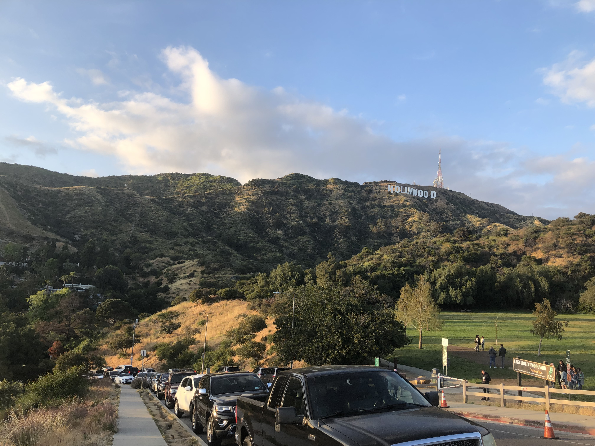

El Salvador

Los Angeles, California

Pennsylvania

Sadé Gay is a masters student at The University of Maryland, College Park majoring in GIS. Her professional interests include GIS and it's applications in climate science, disaster management, and national security. She currently works as a federal contractor for the U.S. Census Bureau managing and maintining the CENSUS Tiger database. She graduated from the University of Maryland in 2022 with a B.S in Geographical Sciences with a background in Environmental Sciences and Meteorology. Some of her hobbies include spending time with her pug Bruce Wayne on scenic trails, baking, and taxidermy.
If you want to be friends, lets connect!
"You only live once, and if you do it right, once is enough."
- Mae West